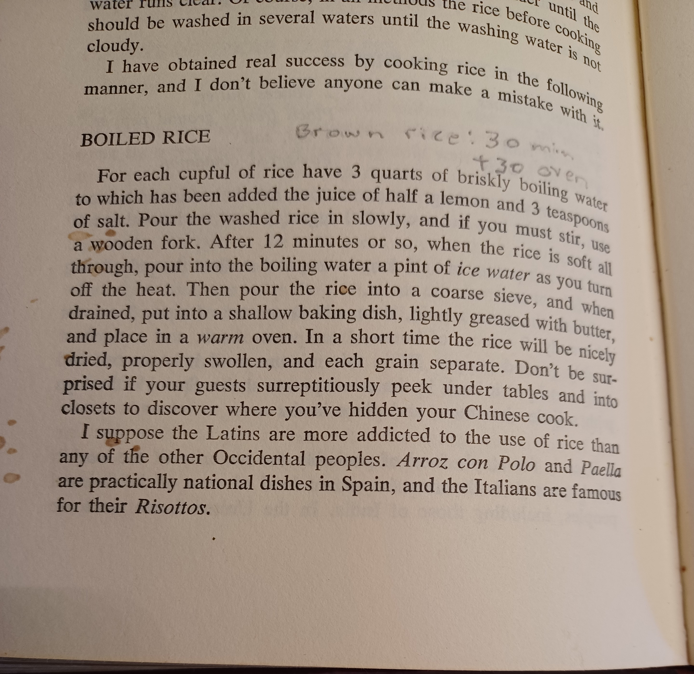

Editor's note: Dad (Robert B. Kadel) loved his With a Jug of Wine cook book and would sit and just read it for fun. He treated us to a lot of good recipes from this book. I picked my copy up at a little used bookstore in Montana.
For each cupful of rice have 3 quarts of briskly boiling water to which has been added the juice of half a lemon and 3 teaspoons of salt. Pour the washed rice in slowly, and if you must stir, use a wooden fork. After 12 minutes or so, when the rice is soft all through, pour into the boiling water a pint of ice water as you turn off the heat. Then pour the rice into a coarse sieve, and when drained, put into a shallow baking dish, lightly greased with butter, and place in a warm oven. In a short time the rice will be nicely dried, properly swollen, and each grain separate. Don't be surprised if your guests surreptitiously peek under tables and into closets to discover where you've hidden your Chinese cook.